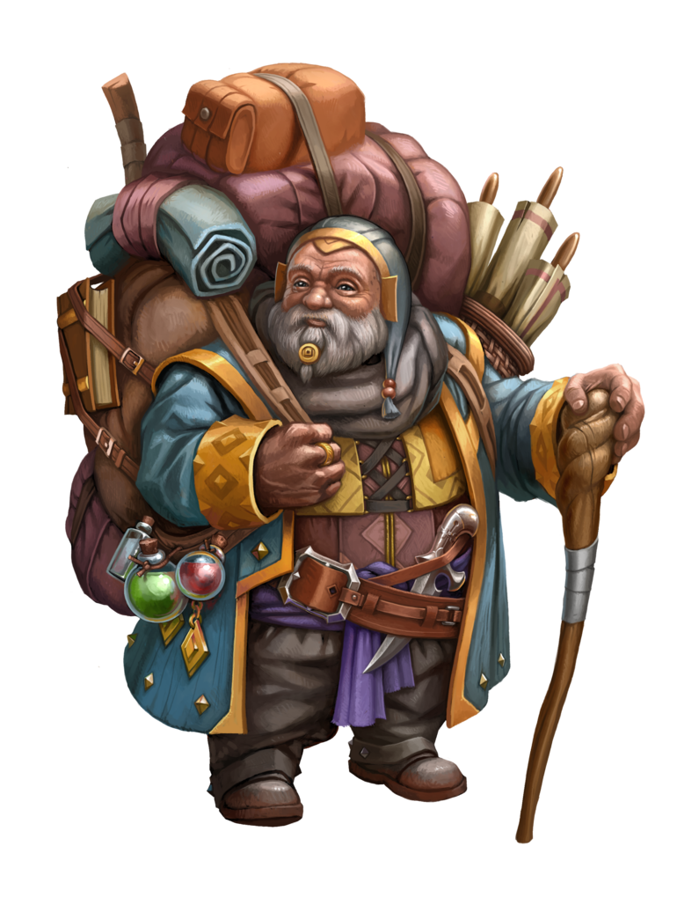

{% extends 'base.html' %}
{% import "bootstrap/wtf.html" as wtf %}

{% block main %}
    <section class="customtext2">
        <hr>
        <div class="container">
            <div class="row justify-content-center">
                <div class ="col">
                    
                </div>
                <div class ="col-md-4 text-center">
                    <div class="headingtext center-block">
                        <h4 class="py-1 px-4 mx-5 textback" style="min-width: 200px; max-width: 400px;">Checkout</h4>
                    </div>
                    <br>
                    <p class="px-2 my-3 py-2 wrap textback justify-content-left">
                        Please, if you wouldn't mind providing the essential details so Jarvis here may deliver your goods.
                    </p>
                </div>
                <div class="col">
                </div>
            </div>
            <div class="scroll-background">
                <div class="container" id="custom-container">
                    <div class="row justify-content-center">
                        <div class="col">
                        </div>
                        <div class ="col-sm-5 checkout-form">
                            <br><br><br><br>
                                {{wtf.quick_form(form)}}
                        </div>
                        <div class="col">
                        </div>
                    </div>
                </div>
            </div>
            <hr>
        </div>
    </section>
{% endblock %}
